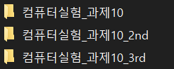
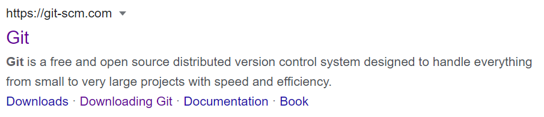
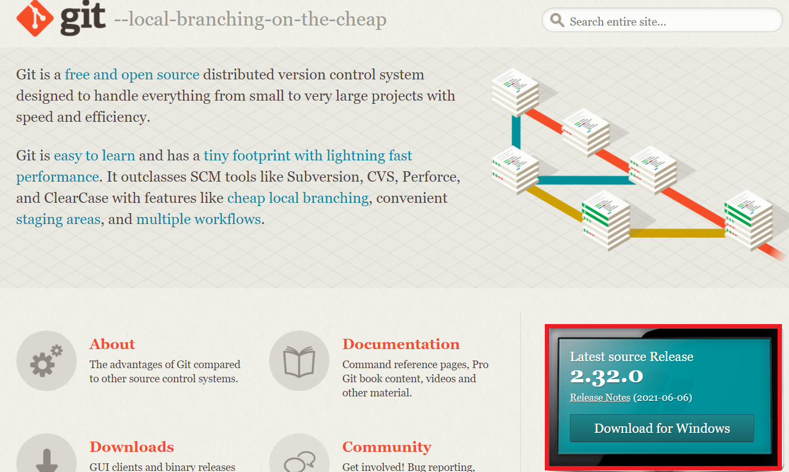
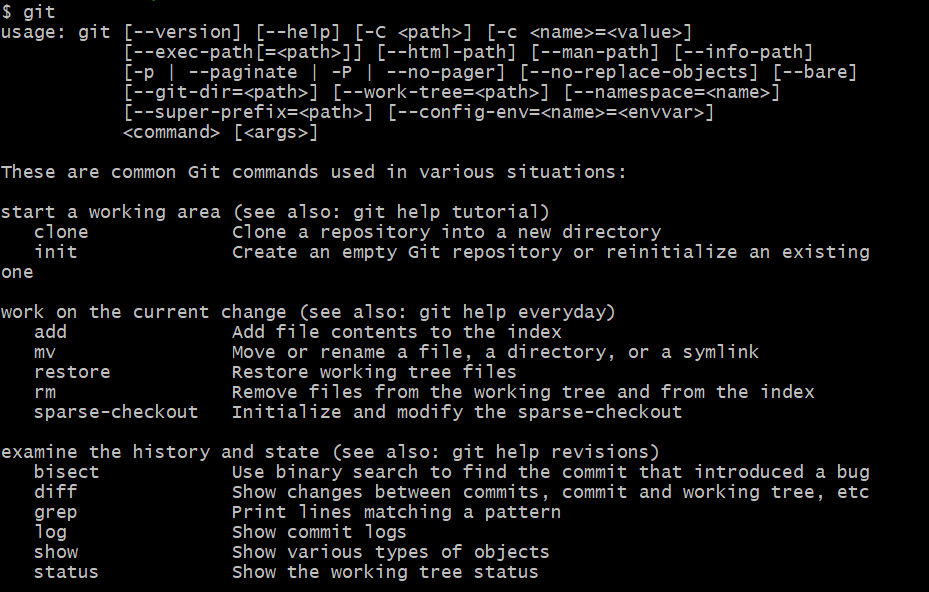
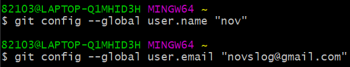

* 다음 포스팅은 깃(Git)의 사용방법에 대하여 정리한 것으로, 개인적인 공부 기록용으로 작성한 글 이기에 잘못된 내용을 포함하고 있을 수 있습니다.
* Window 운영체제를 기준으로 작성했습니다.
[목차]
#1 깃 (Git)
#2 깃 설치 (Git Download)
#3 깃 환경 설정
[Goal]
1. 깃의 특성과 설치 방법에 대한 내용 숙지
2. 깃 환경 설정 방법 숙지
#1 깃 (Git)
아마 컴공이라면 혹은 개발자라면 주변에서 깃(Git) 혹은 깃허브(GitHub)를 필수로 배워야 한다는 말을 종종 들었을 것이다.
그렇다면 깃이란 무엇이고 어떠한 장점이 있길래 그렇게 다들 강조를 하는 것일까?
깃은 리눅스의 창시자인 리누스 토르발스(Linus Torvalds)가 개발한 소스 코드 관리 시스템이다. 깃을 이용하면 매우 효율적으로 코드를 관리하는 것이 가능해 진다. 깃은 다음과 같은 기능을 갖고 있다.
_1 버전 관리
만약 이 글을 보고 있는 사람이 컴퓨터 공학과에 재학하고 있다면 (혹은 개발 경험이 있다면) 대학교 시절 교수님께서 내주신 프로그래밍 과제를 할 때, 몇 번이나 수정해본 경험이 있을 것이다.
나는 깃을 알기 전에는 아래처럼 폴더를 여러개 만들어서 버전을 관리하곤 했다,,, (지금 생각해 보면 엄청나게 비효율적인 과정이었다.)

필자가 수정한 버전이 겨우 3개였으니 망정이지 10개 혹은 100개 이상으로 늘어난다면, 더이상 관리가 불가능 할 것이다.
그리고 무엇보다 이런 방식으로는 어떤 내용을 수정했는지 따로 기록해 두지 않는 이상 알 방법이 없다.
하지만 깃을 이용하면 문서를 수정할 때마다 수정한 시기와 변경 내용을 구체적으로 기록하는 것이 가능해 진다.
_2 백업 (BackUp)
깃의 2번째 장점은 백업 기능이다. 보통 컴퓨터에 존재하는 자료를 따로 보관 하기 위해서 USB나 외장 메모리에 복제해 두곤 한다. 혹은 클라우드 시스템을 이용할 수도 있다.
이처럼 깃또한 다양한 온라인 저장소가 존재하는데, 대표적인 온라인 저장소가 깃허브(GitHub)이다.
_3 협업
깃을 배우는 가장 큰 이유이다. 깃을 이용하면 편리하게 여러 사람들과 협업하는 것이 가능하다.
A프로그래머가 작업파일을 깃허브에 올려두면 B프로그래머가 내려받아서 작업을 수행한다. 그리고 어떤 부분을 수정했는지 기록에 남기에 (_1 버전 관리 기능에서 설명했다.) 효율적으로 협업이 가능하게 된다.
이렇게나 많은 장점이 있는데 깃을 배우지 않을 이유는 없다고 생각한다.
#2 깃 설치 (Git Download)
아래 링크를 클릭 하거나, 구글에 Git을 검색하고 최상단에 나오는 Git 공식 홈페이지로 들어가 준다.
Git
git-scm.com

공식 홈페이지 첫 화면에서 우측 하단에 보이는 청록색 사각형 (Download for Windows) 를 클릭해 깃을 다운로드 해 준다.

딱히 변경할 부분은 없기에, 설치 과정은 생략 하도록 하겠다. 그냥 쭉 Next를 눌러서 설치를 완료해 주면 된다.설치를 완료했다면 탐색기에 Git Bash 를 검색하여 실행시켜 준 뒤, 명령어 git 을 입력한다.
아래같은 화면이 출력되면 성공적으로 설치를 완료한 것이다.

#3 깃 환경 설정
본격적으로 깃을 사용하는 방법에 대해 공부하기 전에, 사용자 정보를 입력 해야만 한다.
깃은 설정한 사용자 정보를 토대로 파일을 누가 언제 만들었는지 추적한다. Git Bash를 실행시켜 주자.
Git Bash가 실행됐다면 터미널에 다음 명령어를 입력해 준다.
$ git config --global user.name "유저이름"
$ git config --global user.email "유저이메일"